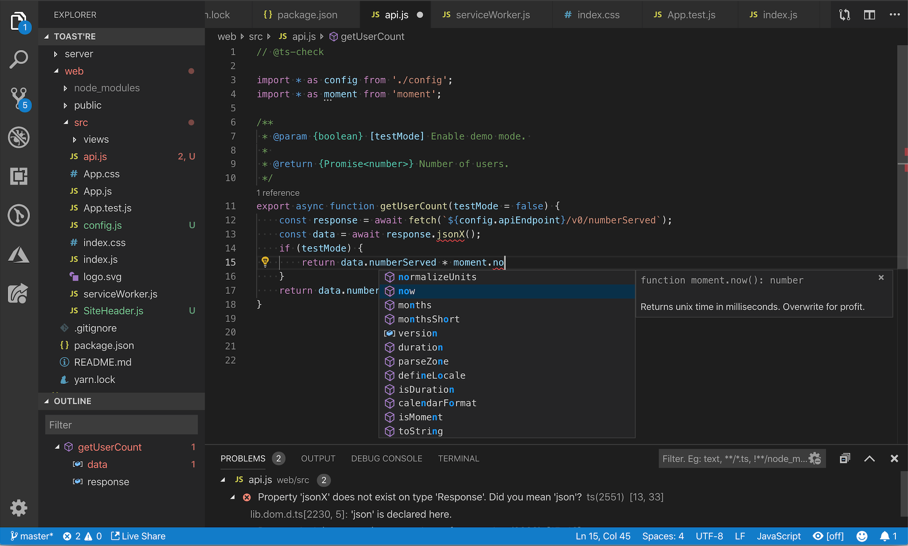
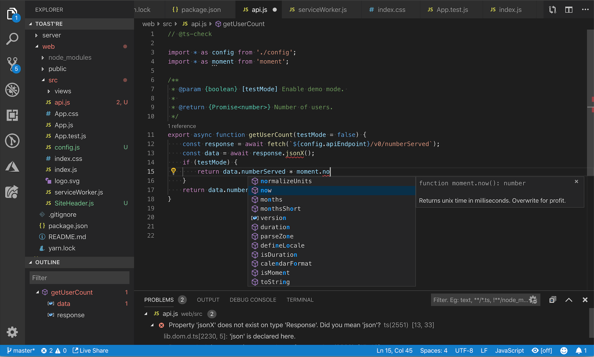

Visual Studio Code (VSC)
C'est un éditeur de code open-source, gratuit et multi-plateforme (Windows, Mac et Linux), développé par Microsoft, à ne pas confondre avec Visual Studio, l'IDE propriétaire de Microsoft.
Principalement conçu pour le développement d'application avec JavaScript, TypeScript et Node.js, l'éditeur peut s'adapter à d'autres types de langages grâce à un système d'extension bien fourni.
VSC propose différents éléments qui peuvent être intéressants pour de développeurs à tous niveau, si bien que, comparé à d'autres éditeurs de texte, le niveau visé est plutôt intermédiaire/avancé. Néanmoins, VSC peut représenter un bon choix de départ même pour un débutant dans la perspective d'atteindre ensuite une certaine expertise. De plus, les fonctionnalités d'édition avancées de VSC peuvent être également exploitées dans d'autres domaines tels que le formatage/nettoyage de fichiers textuels ou données brutes.
 
